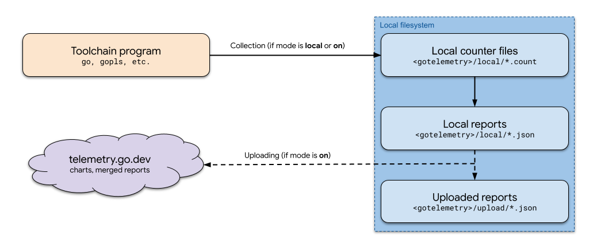
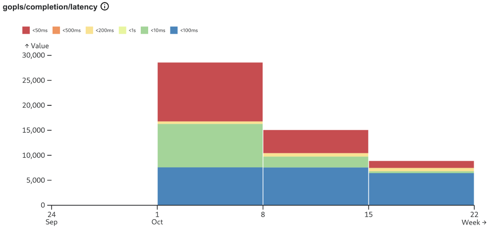
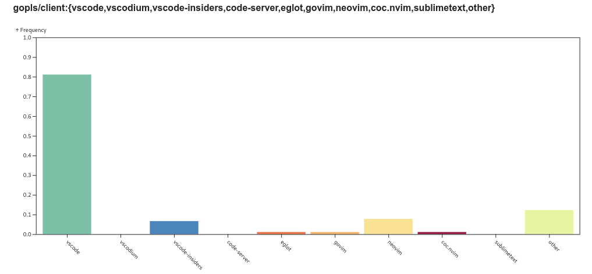
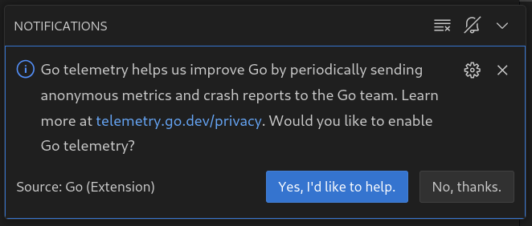

Go Telemetry
Table of Contents:
Background
Overview
Configuration
Counters
Reporting and Uploading
Charts
Telemetry Proposals
IDE Prompting
Frequently Asked Questions
Background
Go telemetry is a way for Go toolchain programs to collect data about their
performance and usage. Here “Go toolchain” means developer tools maintained
by the Go team, including the go command and supplemental tools such as the
Go language server gopls or Go security tool govulncheck. Go telemetry is
only intended for use in programs maintained by the Go team and their selected
dependencies like Delve.
By default, telemetry data is kept only on the local computer, but users may opt in to uploading an approved subset of telemetry data to telemetry.go.dev. Uploaded data helps the Go team improve the Go language and its tools, by helping us understand usage and breakages.
The word “telemetry” has acquired negative connotations in the world of open source software, in many cases deservedly so. Yet measuring the user experience is an important element of modern software engineering, and data sources such as GitHub issues or annual surveys are coarse and lagging indicators, insufficient for the types of questions the Go team needs to be able to answer. Go telemetry is designed to help programs in the toolchain collect useful data about their reliability, performance, and usage, while maintaining the transparency and privacy that users expect from the Go project. To learn more about the design process and motivation for telemetry, please see the telemetry blog posts. To learn more about telemetry and privacy, please see the telemetry privacy policy.
This page explains how Go telemetry works, in some detail. For quick answers to frequently asked questions, see the FAQ.
go telemetry onTo completely disable telemetry, including local collection, run:
go telemetry offTo revert to the default mode of local-only telemetry, run:
go telemetry localPrior to Go 1.23, this can also be done with the
golang.org/x/telemetry/cmd/gotelemetry command. See Configuration for more details.
Overview
Go telemetry uses three core data types:
- Counters are lightweight counts of named events, instrumented in the toolchain program. If collection is enabled (the mode is local or on), counters are written to a memory-mapped file in the local file system.
- Reports are aggregated summaries of counters for a given week. If uploading is enabled (the mode is on), reports for approved counters are uploaded to telemetry.go.dev, where they are publicly accessible.
- Charts summarize uploaded reports for all users. Charts can be viewed at telemetry.go.dev.
All local Go telemetry data and configuration is stored in the directory
os.UserConfigDir()/go/telemetry
directory. Below, we’ll refer to this directory as <gotelemetry>.
The diagram below illustrates this data flow.

In the rest of this document, we’ll explore the components of this diagram. But first, let’s learn more about the configuration that controls it.
Configuration
The behavior of Go telemetry is controlled by a single value: the telemetry
mode. The possible values for mode are local (the default), on, or
off:
- When
modeislocal, telemetry data is collected and stored on the local computer, but never uploaded to remote servers. - When
modeison, data is collected, and may be uploaded depending on sampling. - When
modeisoff, data is neither collected nor uploaded.
With Go 1.23 or later, the following commands interact with the telemetry mode:
go telemetry: see the current mode.go telemetry on: set the mode toon.go telemetry off: set the mode tooff.go telemetry local: set the mode tolocal.
Information about telemetry configuration is also available via read-only Go environment variables:
go env GOTELEMETRYreports the telemetry mode.go env GOTELEMETRYDIRreports the directory holding telemetry configuration and data.
The gotelemetry command can
also be used to configure the telemetry mode, as well as to inspect local
telemetry data. Use this command to install it:
go install golang.org/x/telemetry/cmd/gotelemetry@latest
For the complete usage information of the gotelemetry command line tool,
see its package documentation.
Counters
As mentioned above, Go telemetry is instrumented via counters. Counters come in two variants: basic counters and stack counters.
Basic counters
A basic counter is an incrementable value with a name that describes the
event that it counts. For example, the gopls/client:vscode counter records
the number of times a gopls session is initiated by VS Code. Alongside this
counter we may have gopls/client:neovim, gopls/client:eglot, and so on, to
record sessions with different editors or language clients. If you used
multiple editors throughout the week, you might record the following counter
data:
gopls/client:vscode 8
gopls/client:neovim 5
gopls/client:eglot 2
When counters are related in this way, we sometimes refer to the part before
the : the chart name (gopls/client in this case), and the part after :
as the bucket name (vscode). We’ll see why this matters when we discuss
charts.
Basic counters can also represent a histogram. For example, the gopls/completion/latency:<50ms counter records the number
of times an autocompletion takes less than 50ms.
gopls/completion/latency:<10ms gopls/completion/latency:<50ms gopls/completion/latency:<100ms ...
This pattern for recording histogram data is a convention: there’s nothing
special about the <50ms bucket name. These types of
counters are commonly used to measure performance.
Stack counters
A stack counter is a counter that also records the current call stack of the
Go toolchain program when the count is incremented. For example, the
crash/crash stack counter records the call stack when a toolchain program
crashes:
crash/crash
golang.org/x/tools/gopls/internal/golang.hoverBuiltin:+22
golang.org/x/tools/gopls/internal/golang.Hover:+94
golang.org/x/tools/gopls/internal/server.Hover:+42
...
Stack counters typically measure events where program invariants are violated.
The most common example of this is a crash, but another example is the
gopls/bug stack counter, which counts unusual situations identified in
advance by the programmer, such as a recovered panic or an error that “can’t
happen”. Stack counters include only the names and line numbers of functions
within Go toolchain programs. They don’t include any information about user
inputs, such as the names or contents of a user’s source code.
Stack counters can help track down rare or tricky bugs that don’t get reported
by other means. Since introducing the gopls/bug counter, we’ve found
dozens of instances
of “unreachable” code that was reached in practice, and tracking down these
exceptions has led to the discovery (and fix) of many user-visible bugs that
were either not obvious to the user or too difficult to report. Especially with
prerelease testing, stack counters can help us improve the product more
efficiently than we could without automation.
Counter files
All counter data is written to the <gotelemetry>/local directory, in
files named according to the following schema:
[program name]@[program version]-[go version]-[GOOS]-[GOARCH]-[date].v1.count
- The program name is the basename of the program’s package path, as reported by debug.BuildInfo.
- The program version and go version are also reported by debug.BuildInfo.
- The GOOS and GOARCH values are reported by
runtime.GOOSandruntime.GOARCH. - The date is the date the counter file was created, in
YYYY-MM-DDformat.
These files are memory mapped into each running instance of the instrumented programs. The use of a memory-mapped file means that even if the program immediately crashes, or several copies of instrumented tools are running simultaneously, the counters are recorded safely.
Reporting and uploading
Approximately once a week, counter data gets aggregated into reports named
<date>.json in the <gotelemetry>/local directory. These reports sum all of
counts for the previous week, grouped by the same program identifiers used for
the counter file (program name, program version, go version, GOOS, and GOARCH).
Local reports can be viewed as charts with the
gotelemetry view command.
Here’s an example summary of the gopls/completion/latency counter:

Uploading
If telemetry uploading is enabled, the weekly reporting process will also
generate reports containing the subset of counters present in the
upload config. These counters must be
approved by the public review process described in the next section. After it
has been successfully uploaded, a copy of the uploaded reports are stored in
the <gotelemetry>/upload directory.
Once enough users opt in to uploading telemetry data, the upload process will randomly skip uploading for a fraction of reports, to reduce collection amounts and increase privacy while maintaining statistical significance.
Charts
In addition to accepting uploads, the telemetry.go.dev website makes uploaded data publicly available. Each day, uploaded reports are processed into two outputs, which are available on the telemetry.go.dev homepage.
- merged reports merged counters from all uploads received on the given day.
- charts plot uploaded data as specified in the [chart config], which was
produced as part of the proposal process. Recall from the discussion of
counters that counter names such as
foo:barare decomposed into the chart namefooand bucket namebar. Each chart aggregates counters with the same chart name into the corresponding buckets.
Charts are specified in the format of the chartconfig package. For example,
here’s the chart config for the gopls/client chart.
title: Editor Distribution
counter: gopls/client:{vscode,vscodium,vscode-insiders,code-server,eglot,govim,neovim,coc.nvim,sublimetext,other}
description: measure editor distribution for gopls users.
type: partition
issue: https://go.dev/issue/61038
issue: https://go.dev/issue/62214 # add vscode-insiders
program: golang.org/x/tools/gopls
version: v0.13.0 # temporarily back-version to demonstrate config generation.
This configuration describes the chart to be produced, enumerates the set of counters to be aggregated, and specifies the program versions to which the chart applies. Additionally, the proposal process requires that an accepted proposal be associated with the chart. Here’s the chart resulting from that config:

The telemetry proposal process
Changes to the upload configuration or set of charts on telemetry.go.dev must go through the telemetry proposal process, which is intended to ensure transparency around changes to the telemetry configuration.
Notably, there is actually no distinction between upload configuration and chart configuration in this process. Upload configuration is itself expressed in terms of the aggregations that we want to render on telemetry.go.dev, based on the principle that we should only collect data that we want to see.
The proposal process is as follows:
- The proposer creates a CL modifying config.txt of the chartconfig package to contain the desired new counter aggregations.
- The proposer files a proposal to merge this CL.
- Once discussion on the issue resolves, the proposal is approved or declined by a member of the Go team.
- An automatic process regenerates the upload config to allow uploading of the counters required for the new chart. This process will also regularly add new versions of the relevant programs to the upload config as they are released.
In order to be approved, new charts can’t carry sensitive user information, and additionally must be both useful and feasible. In order to be useful, charts must serve a specific purpose, with actionable outcomes. In order to be feasible, it must be possible to reliably collect the requisite data, and the resulting measurements must be statistically significant. To demonstrate feasibility, the proposer may be asked to instrument the target program with counters and collect them locally first.
The full set of such proposals is available at the proposal project on GitHub.
IDE Prompting
For telemetry to answer the types of questions we want to ask of it, the set of users opting in to uploading need not be large–approximately 16,000 participants would allow for statistically significant measurements at the desired level of granularity. However, there is still a cost to assembling this healthy sample: we need to ask a large number of Go developers if they want to opt in.
Furthermore, even if a large number of users choose to opt in now (perhaps after reading a Go blog post), those users may be skewed toward experienced Go developers, and over time that initial sample will grow even more skewed. Also, as people replace their computers, they must actively choose to opt in again. In the telemetry blog post series, this is referred to as the “campaign cost” of the opt-in model.
To help keep the sample of participating users fresh, the Go language server
gopls supports a prompt that asks users to opt in to Go telemetry.
Here’s what that looks like from VS Code:

If users choose “Yes”, their telemetry mode will be set to on,
just as if they had run
gotelemetry on. In this way,
opting in is as easy as possible, and we can continually reach a large and
stratified sample of Go developers.
Frequently Asked Question
Q: How do I enable or disable Go telemetry?
A: Use the gotelemetry command, which can be installed with go install golang.org/x/telemetry/cmd/gotelemetry@latest. Run gotelemetry off to
disable everything, even local collection. Run gotelemetry on to enable
everything, including uploading approved counters to telemetry.go.dev. See
the Configuration section for more info.
Q: Where does local data get stored?
A: In the os.UserConfigDir()/go/telemetry directory.
Q: How often does data get uploaded, if I opt in?
A: Approximately once a week.
Q: What data gets uploaded, if I opt in?
A: Only counters that are listed in the upload config may be uploaded. This is generated from the [chart config], which may be more readable.
Q: How do counters get added to the upload config?
A: Through the public proposal process.
Q: Where can I see telemetry data that has been uploaded?
A: Uploaded data is available as charts or merged summaries at telemetry.go.dev.
Q: Where is the source code for Go telemetry?
A: At golang.org/x/telemetry.